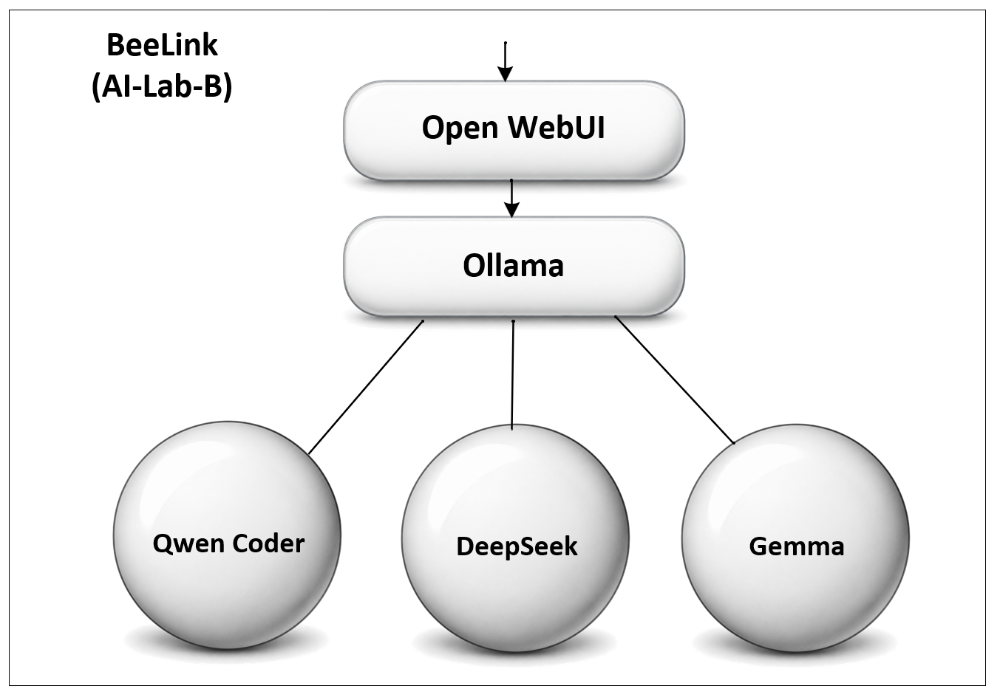
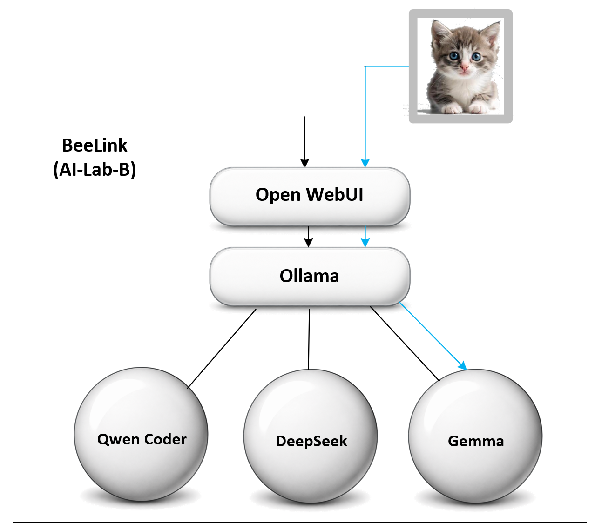

| Model | Size | Role | Status |
|---|---|---|---|
| Qwen2.5-Coder | 14B | Coding-oriented | Running on Node A |
| DeepSeek-R1 | 7B | Reasoning + web search | Running on Node A |
| Qwen3 | 8B | General conversational | Running on Node A |
| "Gwen" | — | General chat | Running on Node B |
| Gemma 3 | 12B | Vision-capable | Running on Node A |
The first model installed on the lab's first node. A coding-oriented model — strong at writing and reasoning about code, but it noticeably leans toward structured, tool-call-style output even for casual questions in Open WebUI (see Engineering Notebook, Note 005).
qwen3:8b is now the default general-purpose chat model on Node A, sized to run comfortably on the Beelink's 32 GB of RAM. qwen3:14b remains an option if more headroom is ever needed.
See a sample conversation with qwen3:8b — general trivia, a creative-writing test, and the model reasoning through some real Open WebUI tool calls.
Added August 8, 2026 to Lab PC 2 (Node A), gemma3:12b is the lab's first vision-capable model — it can read an uploaded image, not just text. On a real photograph it was accurate and specific, correctly describing detail down to a chair leg at the edge of the frame. It's set to public so other lab members can select it too.

One consequence worth noting: because Gemma 3 can't use tool calling at all, it can't be hooked up to Open WebUI's web search. The lab's vision model and its search-capable model have to stay separate models.
Rough guidance for hardware like the Beelink SER9 (32 GB RAM, no discrete GPU):